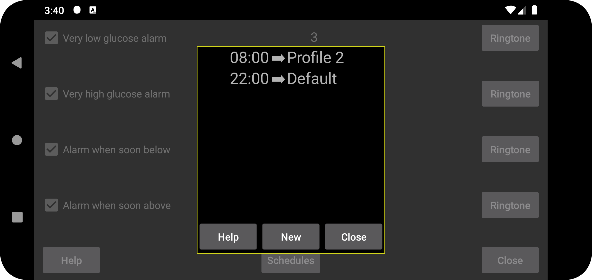
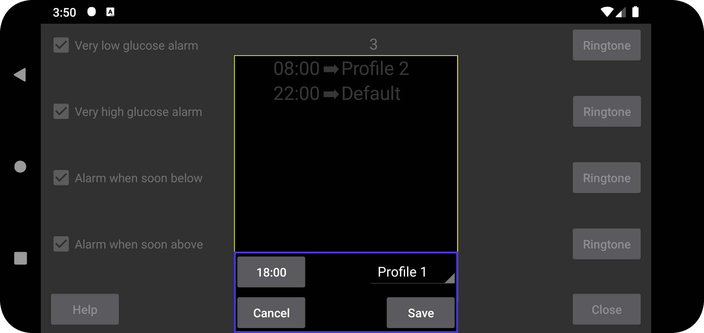

ar de es fa hi it ja ko nl ru uk uz en
برای فعالشدن خودکار نمایهها در زمان مشخص برنامهریزی کنید. «جدید» را بزنید و یک ساعت و یک نمایه را به هم مرتبط کنید. Juggluco هر روز در آن ساعت به نمایهٔ انتخابشده میرود. برای ویرایش زمان یا نمایه، مورد مربوط را لمس کنید. (Juggluco)
تمام تنظیمات «هشدارها» و «گفتار» به نمایهٔ مشترک وابستهاند. نمایهٔ فعال در «منوی چپ ← تنظیمات ← هشدارها» و «منوی میانی سمت چپ ← گفتار» دیده میشود. ابتدا نمایه «پیشفرض» است، اما میتوان آن را به «نمایهٔ ۱»، «نمایهٔ ۲» و مانند آن تغییر داد. تنظیمات هر دو بخش فقط برای نمایهٔ فعال اعمال میشوند. (Alarms) (Talk)
بعضی کاربران تصور کردهاند فقط میتوان زمان شروع یک نمایه را تعیین کرد و نه پایانش را. کافی است مورد دیگری بیفزایید که در زمان دلخواه دوباره به نمایهٔ «پیشفرض» برگردد؛ این همان اثرِ زمان پایان را دارد.